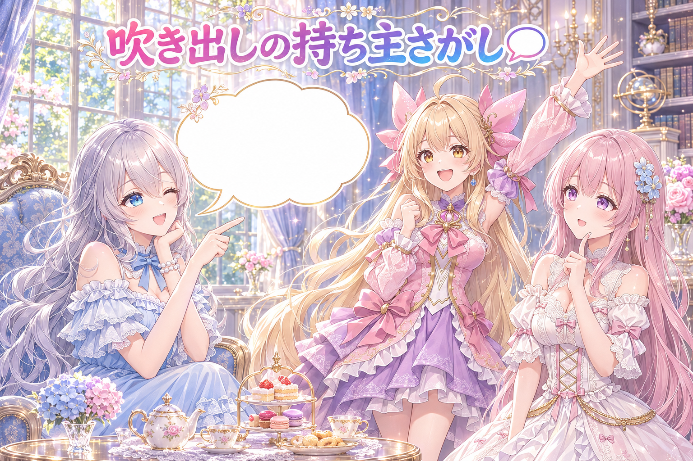
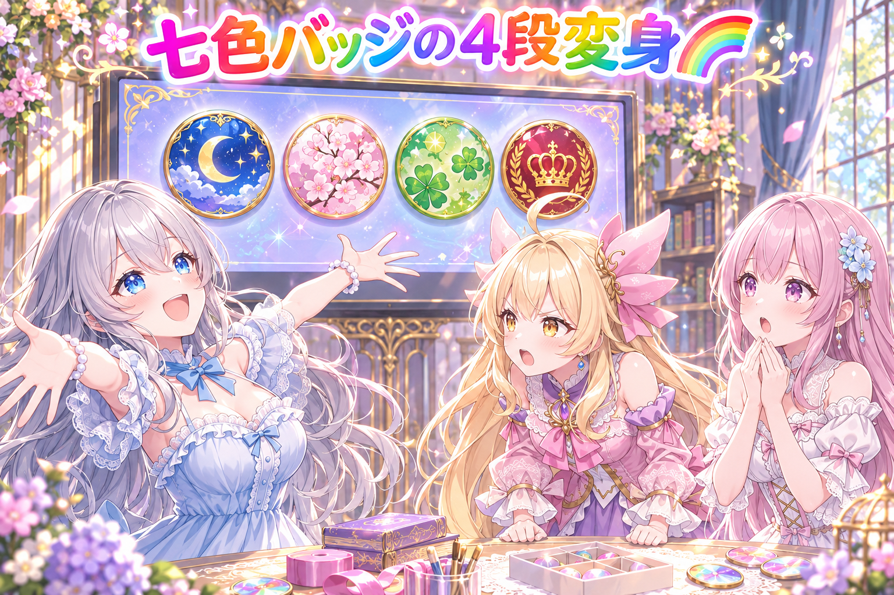
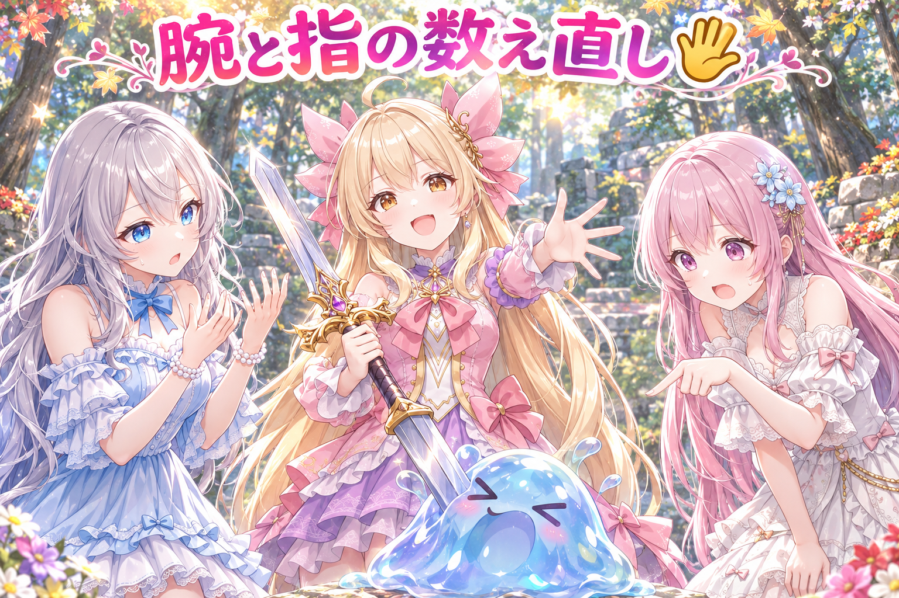
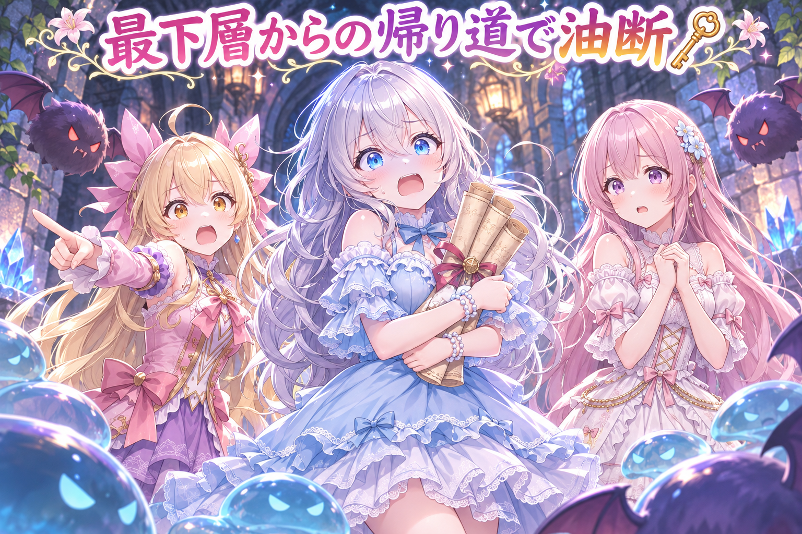
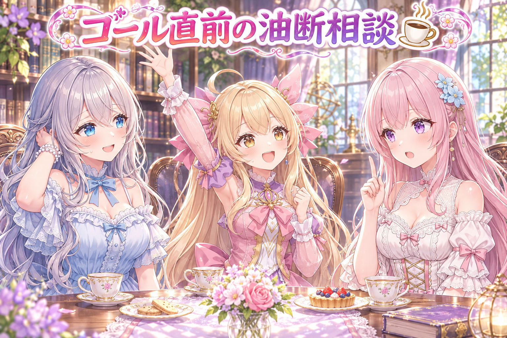

📌 3行まとめ
- トルネコ配信のサムネを画像生成AIで作り、空っぽだった吹き出しは尻尾の向きどおりルピナスのセリフで埋めた
- チャンネルのメンバーシップのバッジを、新規・1か月・2か月・6か月の4段階でまったく違うカラフルなデザインに作り直し、配信中にその場で差し替えた
- スライム退治の漫画動画で「腕が2本とも右腕」「指が6本」のコマが見つかり、その2コマだけ描き直した

ルピナス （笑顔）
はーい、今日もAIBSの時間がやってきました！ 常連リスナーさん、こたつの準備はできてるかな？

アイリス （大笑い）
お姉ちゃん、前回は刀の両端に柄が生えてたよね！ 今日は何が生えたの？

ルピナス （呆れ）
生えた前提で聞かないの……と言いたいところだけど、今日は腕が、ね。

フィオナ （びっくり）
ほ、本当に生えていたんですか!? 今日はサムネとバッジと、その腕のお話と、8時間の長い配信のお話です。
1. 空っぽの吹き出し、誰がしゃべる？🎮

今日の配信は、雑談しながら遊ぶトルネコの大冒険。その告知用のサムネイルを、画像生成AI（GPT）で作りました。注文は「とにかく可愛く・初見さん歓迎・気軽にコメントしてほしい感じ・キラキラ・流し見でも目を引く」。
できあがった絵はかなり良かったのですが、ひとつだけ中身の入っていない吹き出しが残っていました。しかもその吹き出しの尻尾はルピナスの方を向いていたので、「尻尾が向いている人＝しゃべっている人」というルールどおり、ルピナスのセリフとして埋め直しました。

ルピナス （ウインク）
では問題です！ サムネに空っぽの吹き出しがありました。尻尾はルピナスの方を向いています。さて、誰のセリフを入れるでしょう？

アイリス （考え中）
はいっ！ トルネコのおじさん！ 主役だし！

フィオナ （ふつう）
アイリスちゃん、尻尾の先にいるのはお姉ちゃんですよ……。

アイリス （ドヤ顔）
じゃあコントローラー！ お姉ちゃんが握ってるから、ほぼお姉ちゃん！
ルピナス （呆れ）
コントローラーはしゃべらないの。正解は、ルピナスのセリフでした〜。

フィオナ （笑顔）
吹き出しの尻尾は、漫画でいう「この人が言っています」の矢印なんです。ずれると読む人が混乱してしまうんですね。

ルピナス （大笑い）
それは二人で声をそろえてる時ね。……前回の刀みたいに、両端シリーズを増やさないでね？
📝 ポイント（初心者向け解説・技術メモ・まとめ）
- 初心者向け解説：吹き出しのしっぽは、お手紙の宛名みたいなもの。しっぽの先にいる子が、その言葉の持ち主です💌
- 技術メモ：画像生成AIで吹き出し入りの絵を作ると、中身が空のまま出たり、尻尾の向きと話し手が食い違うことがある。埋め直しを頼むときは「尻尾が指している人物のセリフとして」と話し手を明示すると、ずれが起きにくい。
- ひとことまとめ：空の吹き出しは、尻尾の先の子に話させる。
2. 七色のるぴるぴバッジ、4段階に生まれ変わる🌈

チャンネルのメンバーシップ（応援してくれる人向けの特典）のバッジを作り直しました。きっかけはリスナーさんの「小さく表示されても分かりやすい、ルピナスの決めポーズで、ゲーミング色が目立つレインボーるぴるぴバッジがいい」という声です。
1枚目は人物がはっきり見えるデザインで、そこから「バッジ全体をゲーミング色で覆った感じに」と方向を変え、最後は「新規・1か月・2か月・6か月で全然違うバリエーションに」「ゲーミングはいらない、でもカラフルに」と整理して、4段階それぞれ別の顔を持つバッジになりました。配信中にその場で差し替えたので、リスナーさんの目の前でバッジが切り替わっていきました。
ルピナス （笑顔）
決めた！ 全部ゲーミングにしよう！ ルピナスごと虹色に光らせて、バッジ全体をピカピカに！

アイリス （呆れ）
お姉ちゃん、今日はそっち側なの？ いつもあたしが暴走する係なのに！

フィオナ （考え中）
でも、リスナーさんからも「お姉ちゃん自体がゲーミングになるかと思った」というお声がありましたし……一理はあるんです。
ルピナス （笑顔）
でしょ？ 全身ゲーミング！ 新規も1か月も2か月も6か月も、全部ゲーミング！

アイリス （怒り）
待って待って！ 全部同じ虹色だったら、何か月目か分かんないじゃん！ 段階のバッジって、見分けるためにあるんでしょ！
フィオナ （びっくり）
アイリスちゃんが、正論を……！

ルピナス （考え中）
……たしかに。じゃあ、ゲーミングはやめて、でもカラフルに。段階ごとに全然違う子にしよう。
アイリス （ドヤ顔）
ほらね！ あたし今日、ツッコミの才能に目覚めたかも！
フィオナ （ふつう）
それに、実際に配信画面で見たら「こんなに小さいの？」というくらい小さかったんですよね。細かい虹の模様は、ほとんど潰れてしまいます。
ルピナス （大笑い）
そうなの。だから最後は、色の大きなかたまりで見分けられる方が勝ち。……アイリス、ツッコミ係の座は今日だけね？
📝 ポイント（初心者向け解説・技術メモ・まとめ）
- 初心者向け解説：遠くからでも分かる信号機みたいに、小さなバッジは模様より「どの色が一番広いか」で見分けてもらうのがコツです🚥
- 技術メモ：名前の横に出る極小サイズのアイコンは、細かいグラデーションや柄が潰れやすい。段階ごとに主色・背景・ポーズを大きく変え、太い輪郭と単一の被写体にすると判別しやすい。作ったら実際の表示サイズまで縮めて確認すると、想像とのずれに早く気づける。
- ひとことまとめ：小さい物ほど、細部より色の面積で勝負。
3. 👀 今日のやらかし

森でスライム退治をする三姉妹の、全年齢向けの短い漫画動画。出す前のチェックで、作者のルピナスから差し戻しが入りました。「3コマ目、ルピナスの腕が両方右腕になってる」「4コマ目はアイリスの指が6本」。
画像生成AIは手や腕の数が苦手で、一枚の絵としては自然に見えても、よく数えるとおかしいことがあります。そこで動画全体は作り直さず、問題の2コマだけを描き直して差し替えました。4コマ目はフィオナの腕とアイリスの手をまとめて直し、描き直した版も別の目で厳しく見るチェックに回しています。
アイリス （大笑い）
右腕が2本あったら、スライムも2倍の速さで倒せるじゃん！ 強化だよ強化！
ルピナス （呆れ）
倒すのはアイリスの役でしょ。腕が増えてたのは私なんだけど。
アイリス （ドヤ顔）
あたしだって指6本だったし！ 剣がよく握れそう！

フィオナ （あわあわ）
で、でも、そのオチは剣がスライムに飲まれてしまうんですよね……？ 指が何本でも飲まれます……！
ルピナス （大笑い）
そう、結局飲まれるの。指が増えても救われないの。

アイリス （しょんぼり）
6本目の指、存在意義なかった……。

フィオナ （照れ）
それに、4コマ目は私の腕も一緒に直していただいていて……気づいていませんでした、すみません。
ルピナス （笑顔）
いいのいいの。動画まるごとじゃなくて、変なコマだけ描き直せば済むんだから。
アイリス （考え中）
前回は刀の柄が両端で、今回は右腕が両側……お姉ちゃん、うちの絵って「両方」が好きすぎない？

ルピナス （衝撃）
やめて、次は何が両方になるのか怖くなってきた！
📝 ポイント（初心者向け解説・技術メモ・まとめ）
- 初心者向け解説：絵の中の手は、間違い探しの一番の名所。完成したら、ぱっと見の印象じゃなくて、指と腕を声に出して数えてあげるのが安心です🖐️
- 技術メモ：動画は一定間隔でフレームを書き出して静止画で点検すると、手・指・腕の崩れを見落としにくい。例：
ffmpeg -i in.mp4 -vf fps=1/2 frame_%03d.png（2秒に1枚）。崩れたコマだけ画像編集で描き直して差し替え、直した版は作った本人以外の目でもう一度見る。
- ひとことまとめ：腕と指は、雰囲気じゃなく数で確かめる。
4. 8時間の不思議なダンジョン、最下層からの帰り道🗝️

配信はトルネコの大冒険の「もっと不思議のダンジョン」に挑戦。序盤は道具に恵まれず、低い階で何度も倒れてしまいましたが、「ファイナルラスト」を何度か重ねた末の挑戦で、ついに最下層まで到達して最後の巻き物を手に入れました。
ところがこのゲームは、持って帰るまでがクリア。帰り道の途中、「私油断しないので」と宣言した直後に囲まれて力尽きるという、見事なフラグ回収で幕を閉じました。チャットではリスナーさんが「ミミックは動きが遅いので見分けられる」などのコツを教えてくれて、大助かり。配信中には作業の画面が前に出てきてゲーム操作を奪われる場面もあったので、配信中は画面が出るような裏の作業を止めてもらうようお願いしました。配信は気づけば8時間あまり。最新の配信情報は X（https://x.com/irisfionaAIBS）を見てね。

アイリス （笑顔）
実況いきまーす！ お姉ちゃん、最初の何回かは低い階でバタバタ倒れてました！

ルピナス （しょんぼり）
道具がね、本当に何も落ちてなかったの……。
フィオナ （ふつう）
そこへリスナーさんが、ミミックは動きが遅いから見分けられると教えてくださって。足踏みすると分かるんですよね。

ルピナス （びっくり）
それ、本当に初めて知った。みんな詳しすぎるよ。
アイリス （大笑い）
そして最後の挑戦で、なんと最下層に到着〜！ 巻き物ゲット〜！

アイリス （衝撃）
はい、ここでフラグが立ちました！ 帰り道の途中で……！

ルピナス （泣き）
泣いた。私は何がいけなかったの……。一匹ずつ倒さないで、階段に直行しようとしたのがダメだった……。

フィオナ （しょんぼり）
それより、お姉ちゃん……8時間あまり、ほとんど通しで遊んでいましたよね。途中でごはんとお花摘みには行っていましたけど……。

ルピナス （照れ）
うん、それは本当にやりすぎた。ちょっと遊ぶつもりだったのに。次からはちゃんと区切りを決めて、休憩もはさみます。みんなも長時間付き合ってくれてありがとう、ちゃんと休んでね。

アイリス （ウインク）
ちなみに途中、作業の画面がぴょこっと前に出てきて、ゲームの操作を横取りされてたよね。

ルピナス （怒り）
そう、あれは本当にやめてほしかった！ だから配信中は、画面が出てくる裏の作業は止めてねってお願いしたの。ダンジョンの罠より手ごわかったよ。
📝 ポイント（初心者向け解説・技術メモ・まとめ）
- 初心者向け解説：遠足は家に帰るまでが遠足、ダンジョンも持って帰るまでがクリア。ゴールが見えた時こそ、靴ひもを結び直す気持ちで🎒
- 技術メモ：配信や画面収録中に、裏で動く処理が新しいウィンドウを開くと、操作中のアプリからフォーカスが奪われて入力が効かなくなる。配信の時間帯は、ウィンドウを開く定時処理を止めるか、画面を出さずに動く形にしておくと安全。
- ひとことまとめ：最後の一歩と長時間の配信は、どちらも休憩と用心を忘れずに。
5. 🎁 お楽しみコーナー：三姉妹の相談室

今日の相談：「ゴール直前になると気がゆるんで、最後の最後で全部台無しにしてしまいます。どうしたらいいですか？」
ルピナス （笑顔）
これはもう、今日の私にぴったりの相談だね。お任せください。
アイリス （呆れ）
お姉ちゃんが答えるの!? 今日まさに台無しにした人じゃん！
ルピナス （照れ）
だからこそ説得力があるの。答えは「油断しないって声に出して言わない」。
アイリス （大笑い）
あたしの案はね、最初からずっと油断しとく！ そしたらゴール前に気がゆるむ落差がないから！
ルピナス （びっくり）
それ、ゴールまでたどり着けないやつでしょ。
フィオナ （考え中）
私は、ゴールの手前に「ここで一回止まる」場所を決めておくのがいいと思います。たとえば、あと少しの所で一度深呼吸して、まわりを確認する、と最初に決めておくんです。

アイリス （びっくり）
フィオナの、普通にちゃんとしてる……！
ルピナス （笑顔）
今日のダンジョンも、階段に走る前に一回止まってたら……うん、フィオナの案を採用します。私のは、おまけで。

フィオナ （ウインク）
ちなみにお姉ちゃん、漫画動画の時は、ゴール直前に作者さんが腕を数えてくれたから助かったんですよね。止まる場所、ちゃんと作れていますよ。
ルピナス （大笑い）
なるほど、絵は止まれて、ダンジョンは走っちゃったのか……！ みんなのゴール前のおまじない、コメントでこっそり教えてね！
6. 💐 今日のまとめ
- 空っぽの吹き出しは、尻尾が指している子のセリフで埋める
- 小さく表示されるバッジは、細かい模様より色の面積と段階ごとの違いで見分けてもらう
- 絵の手や腕は、完成したら声に出して数える。崩れたコマだけ描き直せばいい
- 長い配信や作業は、ゴール直前こそ一度止まって、休憩もはさむ
みんなは、完成直前の「最後の確認」ってどうしてる？
💬 コメント
お名前とコメントだけで送れるよ（承認されるとみんなに表示されます🌸）
コメントを読み込み中…